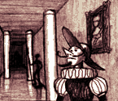
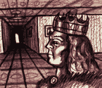
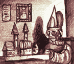
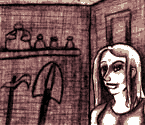
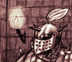
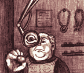
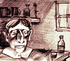

 |
Városközpont | Palota | ||
| A palota belső terme | ||||
| Küldetések terme: | Lakoon herceg | |||
| Klánok terme: |  |
|||
| Házvásárlás terme: |  |
Karmenor hivatalnok | ||
 |
Szaiva | Városközpont | Vegyesbolt | |
 |
Szendrin | Városközpont | Erőd | |
| Thorgard | Városközpont | Fegyverbolt | Kapható áruk:
|
|
 |
Sóher Fanó | Városközpont | Bank | |
| Zimenor pap | Városközpont | Templom | ||
| Rawinor | Városközpont | Mágustorony | ||
 |
Gyurgyó Mester | Városközpont | Kocsma |